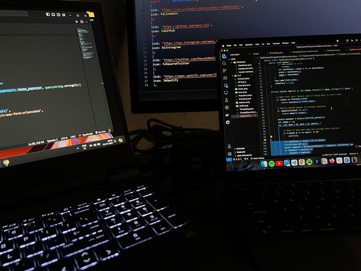

Люблю читать книги. Определенного жанра нет, читаю буквально все, но
больше всего интересна психология.
Занимаюсь спортом - хожу в зал. Занимаюсь с ноября 2023 года. Зал -
место, в котором ты можешь перезагрузиться полностью.

Занимаюсь программированием. Активно начал изучать сферу в 2024 году.
Из языков, на данный момент знаю Python, JS и языки гипертекстовой
разметки HTML и CSS.
Самый любимый фильм - Бойцовский клуб. По началу может показаться
странным, но потом... Это шедевр мира кино для меня
Хазяева - сквад любимых стримеров-блогеров. Они стали больше чем
стримеры, для меня это как друзья, их стримы греют душу и позволяют
хорошенько посмеяться.

Наруто - первое и самое лучшее аниме. После его просмотра я поменял
мнение к аниме. Наруто - это больше чем аниме.
Minecraft - одна из любимых игр, в которой ты можешь полностью
расслабиться или провести весело время с друзьями.
Слово пацана - один из любимейших сериалов. Несмотря на все смешки в
его сторону, для меня он будет лучшим. Его атмосфера, подача,
актерский состав сделали его таким.
Любимым жанром музыки я могу назвать - электронный. Больше всего мне
нравится музыка Oneheart и подобного вайба.
Человек-паук - один из любимейших персонажей. Трилогия Тоби Магуайра,
2 фильма Эндрю Гарфилда и фильмы Тома Холланда - это лучшие
фильмы. Не раз пересматривал их и продолжу это делать.
Любимый жанр игр - сюжетные. Играя в них, ты
полностью погружаешься в эту атмосферу. Сюжет,
персонажи - все это цепляет. Любимая
сюжетная игра - Mafia 2.
Любимая еда - пельмени. А если они еще
и жаренные... За пельмени в
жопу дам